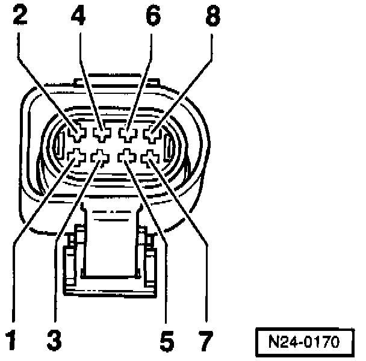
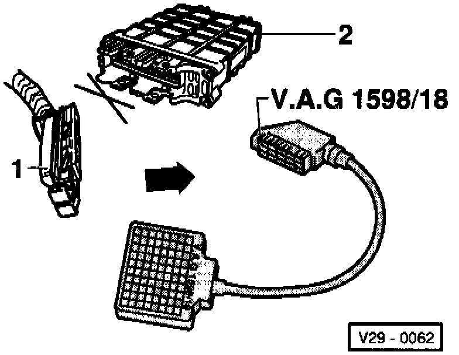
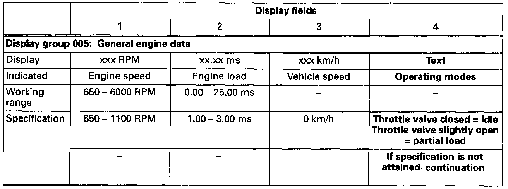
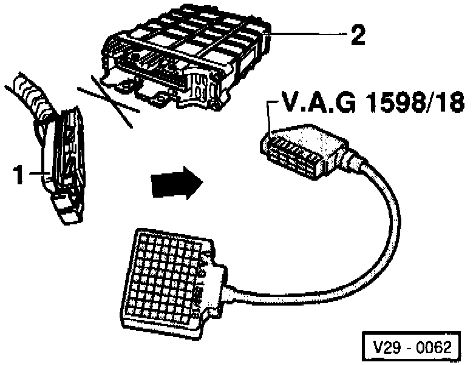
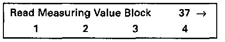
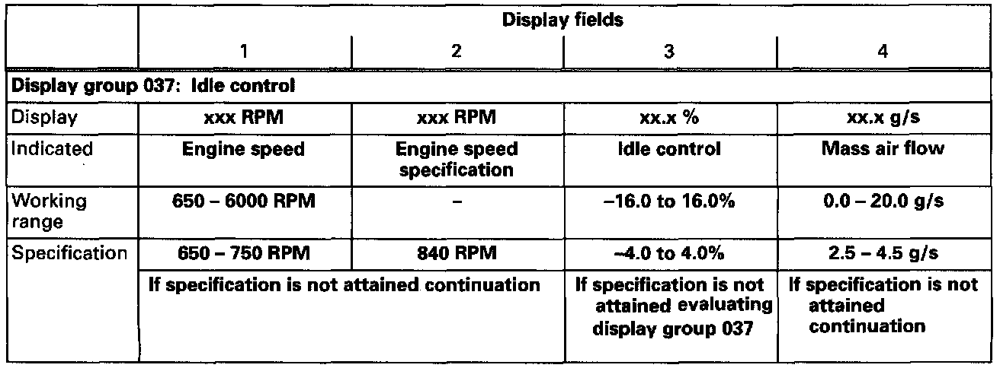
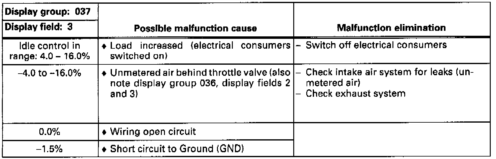
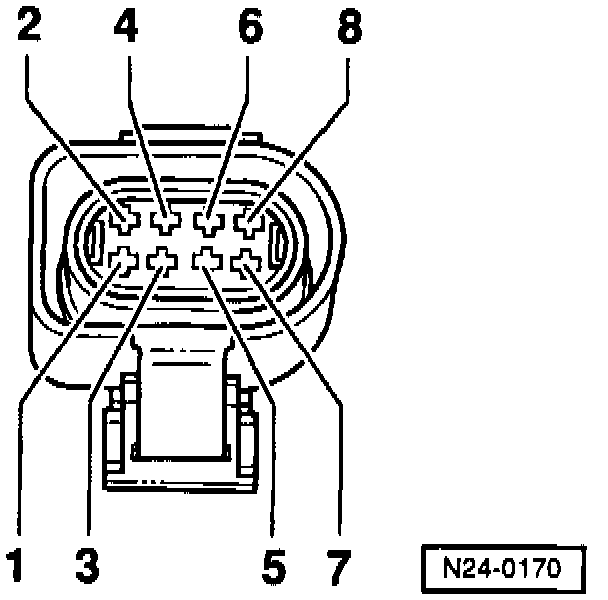

Throttle Valve Control Module, Checking
Throttle Valve Control Module:Checking:
NOTE:
If the throttle valve control module -J338- is removed and installed or replaced, "Basic Setting" function 04 must be initiated. Basic Setting, Initiating
Special tools, testers and auxiliary items:
- VAG 1551/1552 scan tool with VAG 1551/3 adapter cable.
- VAG 1598/18 test box.
- Multimeter (Fluke 83 or equivalent).
- Connector test kit VW 1594.
- Wiring diagram.
Checking voltage supply:

- Separate 8-pin connector to throttle valve control module -J338-.
- Connect multimeter using test leads from VW 1594 to measure voltage at terminals 3 and 7 of connector.
- Switch ignition on.
Specification: 9.0-14.5 volts.
- Connect multimeter using adapter cables from VW 1594 to measure voltage at terminals 4 and 7 of connector.
Specification: 4.0-6.0 volts.
- Switch ignition off.
If the specifications are not attained:

- Connect VAG 1598/18 test box to ECM wiring harness (arrow).

- Check wiring between test box and 8-pin connector for open circuit according to wiring diagram.
- Terminal 3 and test box socket 10.
- Terminal 4 and test box socket 41.
- Terminal 7 and test box socket 33.
Resistance: max. 1.5 ohms.
- Check wiring at 8-pin connector for short circuit to each other.
- Terminal 7 and test box socket 10.
- Terminal 7 and test box socket 41.
- Terminal 4 and test box socket 33.
Specification: infinite ohms.
- Reconnect connector.
If no wiring malfunction is detected:
- Replace Engine Control Module (ECM) -J220-.
- Read the readiness code. If DTC memory has been erased, verify repair via appropriate display group See Readiness code, creating. Testing and Inspection
Checking Closed Throttle Position (CTP) switch
- Connect VAG 1551/1552 scan tool and select "Engine Electronics" address word 01. Testing and InspectionWhen doing this the engine must be running at idle speed.

Indicated on display
- Press buttons -0- and -8- to select "Read Measuring Value Block" function 08 and press -Q- button to confirm input.
Indicated on display
- Press buttons -0-, -0- and -5- to input display group 005 and press -Q- button to confirm input.
Indicated on display (1-4 = Display fields)
- Check Closed Throttle Position (CTP) switch (display field 4).

Continuation:
- Switch ignition off.

- Connect VAG 1598/18 test box to ECM wiring harness (arrow).
- With throttle valve closed connect multimeter to measure resistance at test box sockets 10 and 33.
Specification: max. 5.0 ohms.
- Slowly open throttle valve.
Specification: infinite ohms.
If the specifications are not attained:

- Separate 8-pin connector to throttle valve control module -J338-.
- Check wiring between test box and 8-pin connector for open circuit according to wiring diagram.
- Terminal 3 and test box socket 10
- Terminal 7 and test box socket 33
Resistance: max. 1.5 ohms.
- Check wiring at 8-pin connector for short circuit to each other.
Terminal 7 and test box socket 10
Specification: infinite ohms.
- Reconnect connector.
If no wiring malfunction is detected:
- Replace throttle valve control module -J338-.
- Read the readiness code. If DTC memory has been erased, verify repair via appropriate display group See Readiness code, creating. Testing and Inspection
Checking Throttle Position (TP) actuator and Throttle Position (TP) sensor:
Test conditions:
- Coolant temperature at least 80°C (176°F)
Test sequence:
- Connect VAG 1551/1552 scan tool and select "Engine Electronics" address word 01. Testing and InspectionWhen doing this the engine must be running at idle speed.
Indicated on display
- Press buttons -0- and -8- to select "Read Measuring Value Block" function 08 and press -Q- button to confirm input.
Indicated on display
- Press buttons -0-, -3- and -7- to input display group 037 and press -Q- button to confirm input.

Indicated on display (1-4 = Display fields)
- Check the specifications for idle control (display field 1-4).

- Press -C- button.
- Press buttons -0-, -3- and -6- to input display group 036 and press -Q- button to confirm input.
Indicated on display (1-4 = Display fields)
- Check specifications for idle control (display field 2 and 3).

Evaluating display group 037

Evaluating display group 036

Continuation:
- Switch ignition off.

- Connect VAG 1598/18 test box to ECM wiring harness (arrow).
- Switch ignition on.
- With throttle closed connect multimeter to measure resistance at test box sockets 27 and 53.
Specification: 3-200 ohms.
If the specification is not attained:

- Disconnect 8-pin connector from throttle valve control module -J338-.
- Check wiring between test box and 8-pin connector for open circuit according to wiring diagram.
- Terminal 1 and test box socket 27.
- Terminal 2 and test box socket 53.
- Terminal 7 and test box socket 33.
- Terminal 8 and test box socket 62.
Resistance: max. 1.5 ohms.
- Check wiring at 8-pin connector for short circuit to one another according to wiring diagram.
- Terminal 1 and test box socket 53.
- Terminal 1 and test box socket 62.
- Terminal 1 and test box socket 33.
- Terminal 2 and test box socket 33.
- Terminal 2 and test box socket 62.
- Terminal 7 and test box socket 62.
Specification: infinite ohms.
If no wiring malfunction is detected:
- Replace throttle valve control module -J338-.
- Read the readiness code. If DTC memory has been erased, verify repair via appropriate display group See Readiness code, creating. Testing and Inspection
Checking Throttle Position (TP) sensor:
- Connect VAG 1551/1552 scan tool and select "Engine Electronics" address word 01. Testing and InspectionWhen doing this the ignition must be switched on but engine not running.
Indicated on display
- Press buttons -0- and -8- to select "Read Measuring Value Block" function 08 and press -Q- button to confirm input.

Indicated on display
- Press buttons -0-, -0- and -3- to input display group 003 and press -Q- button to confirm input.
Indicated on display (1-4 = Display fields)
- Press -> button.
- Check the TP sensor specification (display field 3).

- Slowly open throttle valve and watch angle display in display field 3.
- The value must increase uniformly over the complete range.
- Press buttons -0- and -6- to select "End Output" function 06 and press -Q- button to confirm input.
- Switch ignition off.
NOTE:
The displayed value is dependent on the tolerances of the throttle position sensor and does not correspond to the actual opening angle. The maximum permissible displayed value is 90.0 <°.
If the value does not increase uniformly:
- Replace throttle valve control module -J338-.
- Read the readiness code. If DTC memory has been erased, verify repair via appropriate display group See Readiness code, creating. Testing and Inspection
Evaluating display group 003

Check wiring:
- Connect VAG 1598/18 test box to ECM wiring harness (arrow).
- Connect multimeter using test leads from VW 1594 to measure resistance attest box sockets 01 and 40 and check wiring for short circuit to Ground (GND).
Specification: infinite ohms.
- Set multimeter to voltage measurement range.
- Switch ignition on.
- Check wiring for short circuit to positive (B+), if necessary note voltage value.
- Switch ignition off.

- Disconnect 8-pin connector from throttle valve control module -J338-.
Continuation if voltage is present:
If voltage of about 5 volts was present:
- Connect multimeter using test leads from VW 1594 to measure resistance attest box sockets 40 and 41 and check wiring for short circuit to one another.
Specification: infinite ohms.
If the voltage was approx. battery voltage:
- Check wire at 8-pin connector terminal 5 for short circuit to battery positive (B+) according to wiring diagram.
Continuation if no voltage is present:
- Check wiring between test box and 8-pin connector for open circuit according to wiring diagram.
Terminal 5 and test box socket 40
Resistance: max. 1.5 ohms.
If no wiring malfunction is detected:
- Replace throttle valve control module -J338-.
- Read the readiness code. If DTC memory has been erased, verify repair via appropriate display group See Readiness code, creating. Testing and Inspection